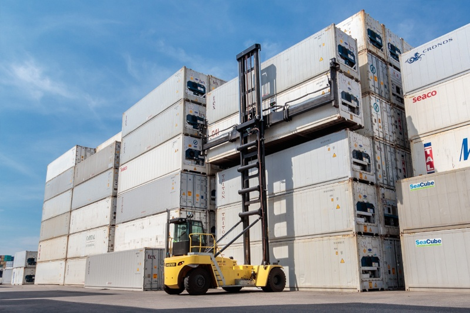

Capstone project
Business understanding
Background
Hyster-Yale is a leading global manufacturer of materials handling equipment and services. Founded in 1929, Hyster-Yale has grown to become one of the largest and most respected names in the industry. In its development center in Nijmegen, The Netherlands Heavy-Duty lifting trucks (Big truck) are developed. As part of its commitment to sustainability, Hyster-Yale has started developing a comprehensive program for electrifying its trucks.
Business objectives
Electric trucks carry less potential energy with them then the conventional ICE trucks. For example, a 16 tons fork lift has a diesel tank of 206 L which is roughly 2060 KWh, the electric variant has maximum 4 battery packs of 70KWh, which gives the truck a maximum capacity of 280 Kwh.
Because a customer ideally doesn’t want to adjust his operation, Hyster-Yale is searching ways to improve efficiency. A full electric truck already has a efficiency between 85 and 95 %. This raises the question what the impact off the operator is on the overall energy usage. In the automotive industry gamification is used to make the operator aware of his energy behavior, and motivate the operator to drive more efficient.
Business objective : What is the spread of operator efficiency on the overall energy usage of the truck?
The term operator efficiency in this project is limited to accelerator pedal which is the input for accelerate the truck, and hoist-lever which is used for lifting/accelerating the load vertically.
Business success criteria
Assess situation
Data mining goals
Produce project plan
Data understanding
For this project truck data is used which is collected by a data logger installed on the truck. The data of this project is from a Hyster Empty container handler. 
The data logger is recording in mdf4 format, which is a data logging standard. The data recorded is timeseries data with a frequency range of 1 to 100 Hz. there are around the 500 signals recorded, but for this project the signals are limited to the signals the operator control, and the output these inputs will give.
- Signals:
- Lift_Height: RAW height of the spreader [mm] has to be multiplied by 2 to get the correct value
- Vehicle_speed: Speed of the truck [km/h] Engine_Speed Engine rpm [rpm]
- AccelPedalPos Accelerator pedal [%] 0 no throttle, 100 is wide open throttle
- Hoist_Percentage Percentage of Hoist lever (or joystick) Engine_Actual_Torq Engine gross torque [%]
- EngPercLoadAtCurrSp Engine load [%]
- NomFrictionPercTorq Torque loss of engine [%]
- FuelRate Diesel used [l/hour]
- Lift_pressure_raw Pressure in hydraulic lift circuit [bar]
- Brake_pressure_raw Pressure in Hydraulic brake circuit [bar]
- lat Latitude from GPS [°]
- lon Longitude from GPS [°]
- Lift_Status Boolean Lift status
- Lower_Status Boolean Lower status
- Tilt_Fwd Boolean Tilt FWD status
- Tilt_Bwd Boolean Tilt BWD status
- PPS_Bwd Boolean PPS BWD status
- PPS_Fwd Boolean PPS FWD status
- Spr_Extend Boolean Spreader extend status
- Spr_Retract Boolean Spreader retract status
- SS_Left Boolean SideShift left status
- SS_Right Boolean SideShift Right status
- TWL_Unlock Boolean Twistlock unlock status
- TWL_Lock Boolean Twistlock lock status
- Lift_Height: RAW height of the spreader [mm] has to be multiplied by 2 to get the correct value
A small explanation about a empty container handler (ECH). A empty container handler is a lift truck with a modified front end. Most of the times the mast is longer then a similar lift truck, upt 18 m fully extended. The biggest difference with a ‘standard’ lift truck is that instead of forks a spreader is mounted in the mast. The spreader function is picking containers. Functions on a ECH: Lifting/ lowering –> move the load vertically. Tilting FWD/BWD –> inclining the mast for maneuvering the spreader and shifting the load moment. Power Pile Slope –> inclinate the spreader for maneuvering the spreader on the container. Spreader extend/retract –> It need to pick up 20 ft aswell as 40 ft containers, on picture above the spreader is extended.
Side Shift left/right –> possibility to shift the spreader to the left or right for maneuvering on the container TwistLock lock/unlock –> Twislocks are used to lock unlock containers